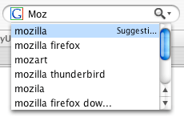
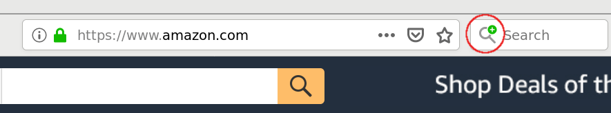

{{AddonSidebar}}
The OpenSearch description format lets a website describe a search engine for itself, so that a browser or other client application can use that search engine. OpenSearch is supported by (at least) Firefox, Edge, Internet Explorer, Safari, and Chrome. (See Reference Material for links to other browsers' documentation.)
Firefox also supports additional features not in the OpenSearch standard, such as search suggestions and the <SearchForm> element. This article focuses on creating OpenSearch-compatible search plugins that support these additional Firefox features.
OpenSearch description files can be advertised as described in Autodiscovery of search plugins, and can be installed programmatically as described in Adding search engines from web pages.
The XML file that describes a search engine follows the basic template below. Sections in [square brackets] should be customized for the specific plugin you're writing.
<OpenSearchDescription xmlns="http://a9.com/-/spec/opensearch/1.1/"
xmlns:moz="http://www.mozilla.org/2006/browser/search/">
<ShortName>[SNK]</ShortName>
<Description>[Search engine full name and summary]</Description>
<InputEncoding>[UTF-8]</InputEncoding>
<Image width="16" height="16" type="image/x-icon">[https://example.com/favicon.ico]</Image>
<Url type="text/html" template="[searchURL]">
<Param name="[key name]" value="{searchTerms}"/>
<!-- other Params if you need them… -->
<Param name="[other key name]" value="[parameter value]"/>
</Url>
<Url type="application/x-suggestions+json" template="[suggestionURL]"/>
<moz:SearchForm>[https://example.com/search]</moz:SearchForm>
</OpenSearchDescription>
URI of an icon for the search engine. When possible, include a 16×16 image of type image/x-icon (such as /favicon.ico) and a 64×64 image of type image/jpeg or image/png.
The URI may also use the data: URI scheme. (You can generate a data: URI from an icon file at The data: URI kitchen.)
<Image height="16" width="16" type="image/x-icon">https://example.com/favicon.ico</Image> <!-- or --> <Image height="16" width="16">data:image/x-icon;base64,AAABAAEAEBAAA … DAAA=</Image>
Firefox caches the icon as a base64 data: URI (search plug-ins are stored in the profile's searchplugins/ folder). http: and https: URLs are converted to data: URIs when this is done.
https:// URIs as opposed to data: URIs), Firefox will reject icons larger than 10 kilobytes.
template attribute indicates the base URL for the search query.type="text/html" specifies the URL for the actual search query.type="application/x-suggestions+json" specifies the URL for fetching search suggestions. In Firefox 63 onwards, type="application/json" is accepted as an alias of this.type="application/x-moz-keywordsearch" specifies the URL used when a keyword search is entered in the location bar. This is supported only in Firefox.For these URL types, you can use {searchTerms} to substitute the search terms entered by the user in the search bar or location bar. Other supported dynamic search parameters are described in OpenSearch 1.1 parameters.
For search suggestions, the application/x-suggestions+json URL template is used to fetch a suggestion list in JSON format. For details on how to implement search suggestion support on a server, see Supporting search suggestions in search plugins.
{searchTerms} to insert the search terms entered by the user in the search bar.moz: XML namespace prefix in the example above to ensure that other user agents that don't support this element can safely ignore it.Web sites with search plugins can advertise them so Firefox users can easily install the plugins.
To support autodiscovery, add a <link> element for each plugin to the <head> of your web page:
<link rel="search"
type="application/opensearchdescription+xml"
title="searchTitle"
href="pluginURL">
Replace the bolded items as explained below:
<ShortName>.If your site offers multiple search plugins, you can support autodiscovery for them all. For example:
<link rel="search" type="application/opensearchdescription+xml"
title="MySite: By Author" href="http://example.com/mysiteauthor.xml">
<link rel="search" type="application/opensearchdescription+xml"
title="MySite: By Title" href="http://example.com/mysitetitle.xml">
This way, your site can offer plugins to search by author, or by title.
In Firefox, an icon change in the search box indicates there's a provided search plugin. (See image, the green plus sign.) Thus if a search box is not shown in the user's UI, they will receive no indication. In general, behavior varies among browsers.
OpenSearch plugins can automatically update. To support this, include an extra Url element with type="application/opensearchdescription+xml" and rel="self". The template attribute should be the URL of the OpenSearch document to automatically update to.
For example:
<Url type="application/opensearchdescription+xml"
rel="self"
template="https://example.com/mysearchdescription.xml" />
If there is a mistake in your Search Plugin XML, you could run into errors when adding a discovered plugin. If the error message isn't be helpful, the following tips could help you find the problem.
Content-Type: application/opensearchdescription+xml.template URL must be escaped as &, and tags must be closed with a trailing slash or matching end tag.xmlns attribute is important — without it you could get the error message "Firefox could not download the search plugin".text/html URL — search plugins including only Atom or RSS URL types (which is valid, but Firefox doesn't support) will also generate the "could not download the search plugin" error.In addition, the search plugin service provides a logging mechanism that may be useful to plugin developers. Use about:config to set the pref 'browser.search.log' to true. Then, logging information will appear in Firefox's Error Console (Tools ➤ Error Console) when search plugins are added.